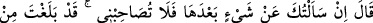

76. Mûsâ: “Eğer bundan sonra sana bir şey sorarsam artık benimle arkadaşlık
etme. Hakîkaten benim tarafımdan (ileri sürebilecek) mazeretin sonuna ulaştın.”
dedi.
“Mûsâ: “Eğer” bu tuhaf fiiller gibi bir şey sâdır olur da “bundan” bu defadan
“sonra sana bir şey sorarsam artık bana arkadaşlık etme.” dedi.” Benim arkadaşım
ve yakınım olma. Şâyet senden tekrar arkadaşlık taleb etsem bile, yine benden uzaklaş.
“Hakîkaten benim tarafımdan (ileri sürebilecek) mâzeretin sonuna ulaştın.” dedi.”
Üç defa sana muhalefet ettiğimden dolayı benden ayrılma konusunda mazur sayılırsın.
Özür; insanın ‘yapmadım veya şundan dolayı yaptım ya da yaptım bir daha
yapmayacağım”
gibi
ifâdeler
kullanarak
hatalarının
silinmesinin
yollarını
araştırmasıdır. Bu üçüncü söz tevbedir. Her tevbe özürdür, ancak her özür tevbe
sayılmaz. Özür dilemek, günahın eserinin silinmesinden ibarettir.
Hadiste şöyle buyrulmuştur: “Allah, kardeşim Mûsâ’ya rahmet etsin. Utandı ve
böyle demek zorunda kaldı. Şâyet arkadaşı Hızır (a.s.)’la beraberliği sürseydi, daha
da acâib şeyler görürdü.”[214]
el-Hasaisu’s-suğrâ’da şöyle geçer: Peygamberimiz (s.a.)’in husûsiyetlerinden birisi
de, şerîat ve hakîkatin kendisinde toplanmış olmasıdır. Mûsâ (a.s.) ile Hızır (a.s.)
arasında vuku bulan kıssanın da delâlet ettiği gibi diğer peygamberlerde bu ikisinden
sadece biri vardı.
‘Şerîat’ ile kastedilen, zâhire göre hüküm vermektir. ‘Hakîkat’ ile kastedilen, bâtına
göre hüküm vermektir. Âlimler şu hususu da açıkça belirtmişlerdir: Peygamberlerin
çoğu, muttalî oldukları işlerin bâtın ve hakîkatleriyle değil, zâhiriyle hüküm vermek için
gönderilmişlerdir. İşte Mûsâ (a.s.), çocuğu öldürmesi üzerine Hızır (a.s.)’a: “Gerçekten
sen fena bir şey yaptın!” diye itiraz edince, Hızır (a.s.)’ın: “Ben bunu kendiliğimden
yapmadım.” (el-Kehf, 18/82) diyerek cevap vermesi bundan dolayıdır.
Yine Hızır (a.s.), Mûsâ (a.s.)’a şöyle demiştir:
“Ben Allah’tan bir ilim üzereyim ki, senin onunla amel etmen uygun değildir. Çünkü
sen onunla amele me’mûr değilsin. Sen de Allah’tan bir ilim üzeresin ki, benim
onunla amel etmem uygun değildir. Çünkü ben onunla amele me’mur değilim.”[215]
Tefsîr-i İbn Hibbân’da şöyle der: Cumhur Hızır (a.s.)’ın peygamber olduğu
görüşündedir. Onun ilmi de amel etmesi için kendisine vahyolunan işlerin bâtın
yönlerini bilmekti. Mûsâ (a.s.)’ın ilmi ise bâtına göre hüküm vermek değil, zâhire göre
hüküm vermekti.
Seleften bazıları, Hızır (a.s.)’ın bugüne kadar hakîkat âlemine hükmettiğini,
birdenbire ölenlerin Hızır (a.s.) tarafından öldürüldüğünü söylemiştir. Şâyet bu
doğruysa, Hızır (a.s.) bu ümmetten olduğu halde Peygamber (s.a.)’e niyâbeten bunu